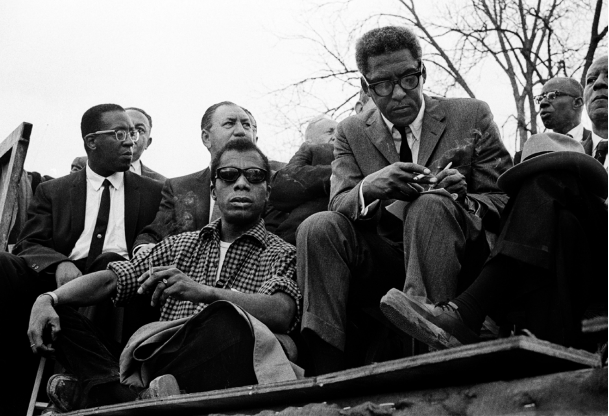

In this excerpt from the interview conducted by Peg Byron in 1986, Rustin recounts a famous story of his refusal to sit in the back of the bus—an action for which he was beaten and arrested. This source appears as it was originally written, including the use of the N-word. This document has not been edited to reflect the reality of the dehumanizing power and frequency with which the term has been used historically.
One of the reasons that I decided that I should no longer remain in the closet came from an experience I had as a black. One day, in 19..., way back as far as 1947, I walked into a bus in the South, all prepared to do what I had always done in the South. Take a seat in the rear.
As I was going by the second seat to go to the rear, a white child reached out for the red necktie I was wearing and pulled it. Whereupon its mother said, “Don’t touch a nigger.” Something happened, and I said to myself, If I go and sit quietly in the back of that bus now, that child who was so innocent of race relations that it was going to play with me, will have seen so many blacks go in the back and sit down quietly that it’s going to end up saying, “They like it back there, I’ve never seen anybody protest against it.” That’s what people in the South would say.
So I said, I owe it to that child, not only to my own dignity, but I owe it to that child that it should be educated to know that blacks do not want to sit in the back, and therefore I should get arrested letting all these white people in the bus know that I do not accept that.
Now, it occurred to me shortly after that that it was an absolute necessity for me to declare homosexuality, because if I didn’t I was a part of the prejudice.
Citation: Peg Byron, “Interview with Bayard Rustin,” February 5, 1986, Courtesy of the Estate of Bayard Rustin
James Baldwin and Bayard Rustin sit on the speakers’ platform during the 1965 march from Selma to Montgomery, Alabama. Seated with Baldwin and Rustin is A. Philip Randolph, co-founder of both the March on Washington Movement and the head of the Brotherhood of Sleeping Car Porters. Both Baldwin and Rustin were gay men whose influence on the civil rights movement is undeniable but both faced marginalization because of their sexuality.
Citation: Stephen F. Somerstein, “Speakers platform—1965 Selma to Montgomery, Alabama Civil Rights March,” March 25, 1965, Montgomery, Alabama, Stephen F. Somerstein/Contributor, Getty Images.
In the spring of 1986, in the midst of an AIDS epidemic that had been allowed to expand due to governmental neglect and homophobia, Rustin spoke out about the way LGBTQ+ people were discriminated against. Even while Black Americans continued to be oppressed, he thought that racism was no longer nearly as acceptable as homophobia was. But at the same time, he urged gay activists to build coalitions and address discrimination within the LGBTQ+ community. He spoke about these issues to the Philadelphia chapter of Black and White Men Together, a group organized by gay men to overcome racial hostility. This source appears as it was originally written, including the use of the N-word. This document has not been edited to reflect the reality of the dehumanizing power and frequency with which the term has been used historically.
Today, Blacks are no longer the litmus paper or the barometer of social change. Blacks are in every segment of society and there are laws that help to protect them from racial discrimination. The new “niggers” are gays. No person who hopes to get politically elected, even in the deep South, not even Governor Wallace, would dare openly and publicly to argue that blacks should not have the right to use public accommodations. Nobody would dare to say any number of things about blacks that they are perfectly prepared to say about gay people. It is in this sense that gay people are the new barometer for social change...
Therefore, I would like to be very hard with the gay community, not for the sake of being hard, but to make clear that, because we stand in the center of progress toward democracy, we have a terrifying responsibility to the whole society.
There are four aspects to this responsibility. First, the gay community cannot work for justice for itself alone. Unless the community fights for all, it is fighting for nobody, least of all for itself. Second, gay people should not practice prejudice. It is inconsistent for gay people to be antisemitic or racist. These gay people do not understand human rights. Third, gay people should look not only at what people are doing to us but also what we are doing to each other. Fourth, gay people should recognize that we cannot fight for the rights of gays unless we are ready to fight for a new mood in the United States, unless we are ready to fight for the radicalization of this society.
Citation: Bayard Rustin, “The New Niggers Are Gays,” In Time on Two Crosses: The Collected Writings of Bayard Rustin, Donald Weise and Devon W. Carbado ed., (Jersey City: Cleis Press, 2003).